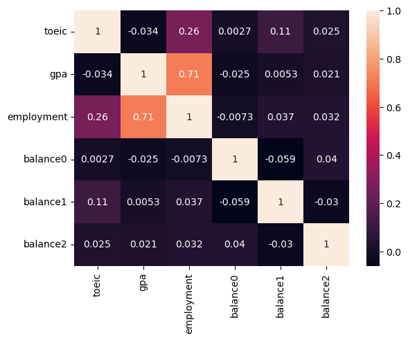
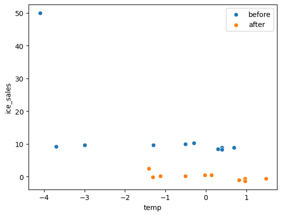

import numpy as np
import pandas as pd
import matplotlib.pyplot as plt
import seaborn as sns
import sklearn.linear_model
import sklearn.preprocessing07wk-28: 선형모형의 적
1. 강의영상
2. Imports
3. 선형모형의 적
A. 결측치의 존재
- 문제: 데이터에서 누락된 값이 있는 경우, 선형모델이 돌아가지 않음. (“NaN이 있어서 모형을 적합할 수 없습니다”라는 에러 발생)
- 해결방법
- 방법1: 결측치를 제거
- 결측치가 포함된 열을 제거
- 결측치가 포함된 행을 제거
- 위의 두 방법을 혼합
- 방법2: 결측치를 impute
- train 에서는 fit_transform, test 에서는 transform
- train, test에서 모두 fit_transform
- 임의의 값 (예를들면 -999)로 일괄 impute
- interploation (이미지나 시계열 자료)
B. 다중공선성의 존재
- 문제: 데이터의 설명변수가 역할이 겹칠경우 선형모형의 일반화 성능이 좋지 않음.
- 해결방법
- 방법1: 변수제거
- X의 corr을 파악하고 (혹은 히트맵을 그리고) 느낌적으로 제거
- PCA등 차원축소기법을 이용한 제거
- 방법2: 공선성을 가지는 변수를 모아 새로운 변수로 변환
- 느낌적으로 변환 (예시 Fsize = Sibsp + Parch + 1, 이후 Sibsp, Parch 는 drop)
- PCA를 이용한 변환
- 방법3: Ridge, Lasso 등 패널티계열을 사용
- Rigde
- Lasso
- Elastic net
- 방법1-1 (X의 corr을 파악하고 느낌적으로 제거) 의 예시
df = pd.read_csv("https://raw.githubusercontent.com/guebin/MP2023/main/posts/employment_multicollinearity.csv")
X = df.loc[:,'gpa':'toeic2']
X| gpa | toeic | toeic0 | toeic1 | toeic2 | |
|---|---|---|---|---|---|
| 0 | 0.051535 | 135 | 129.566309 | 133.078481 | 121.678398 |
| 1 | 0.355496 | 935 | 940.563187 | 935.723570 | 939.190519 |
| 2 | 2.228435 | 485 | 493.671390 | 493.909118 | 475.500970 |
| 3 | 1.179701 | 65 | 62.272565 | 55.957257 | 68.521468 |
| 4 | 3.962356 | 445 | 449.280637 | 438.895582 | 433.598274 |
| ... | ... | ... | ... | ... | ... |
| 495 | 4.288465 | 280 | 276.680902 | 274.502675 | 277.868536 |
| 496 | 2.601212 | 310 | 296.940263 | 301.545000 | 306.725610 |
| 497 | 0.042323 | 225 | 206.793217 | 228.335345 | 222.115146 |
| 498 | 1.041416 | 320 | 327.461442 | 323.019899 | 329.589337 |
| 499 | 3.626883 | 375 | 370.966595 | 364.668477 | 371.853566 |
500 rows × 5 columns
corr 조사
X.corr()| gpa | toeic | toeic0 | toeic1 | toeic2 | |
|---|---|---|---|---|---|
| gpa | 1.000000 | -0.033983 | -0.035722 | -0.037734 | -0.034828 |
| toeic | -0.033983 | 1.000000 | 0.999435 | 0.999322 | 0.999341 |
| toeic0 | -0.035722 | 0.999435 | 1.000000 | 0.998746 | 0.998828 |
| toeic1 | -0.037734 | 0.999322 | 0.998746 | 1.000000 | 0.998721 |
| toeic2 | -0.034828 | 0.999341 | 0.998828 | 0.998721 | 1.000000 |
heatmap 플랏
sns.heatmap(X.corr(),annot=True)
C. 관련이 없는 변수의 존재
- 문제: 데이터에서 불필요한 설명변수가 너무 많을 경우 선형모형의 일반화 성능이 좋지 않음.
- 불필요한 설명변수임의 쉬운 예시: 고객이름, ID, Index 관련 변수
- 해결방법
- 방법1: 변수제거
- (y,X)의 corr을 파악하고 (혹은 히트맵을 그리고) 느낌적으로 제거
- PCA를 이용한 제거
- Lasso를 이용한 제거
- 방법2: 더 많은 데이터를 확보 (궁극기술, 그런데 차원의 저주때문에 힘듬)
- 방법1-1의 예시
np.random.seed(1)
df = pd.read_csv('https://raw.githubusercontent.com/guebin/MP2023/main/posts/employment.csv')
df_balance = pd.DataFrame((np.random.randn(500,3)).reshape(500,3)*1,columns = ['balance'+str(i) for i in range(3)])
df_train = pd.concat([df,df_balance],axis=1)
df_train| toeic | gpa | employment | balance0 | balance1 | balance2 | |
|---|---|---|---|---|---|---|
| 0 | 135 | 0.051535 | 0 | 1.624345 | -0.611756 | -0.528172 |
| 1 | 935 | 0.355496 | 0 | -1.072969 | 0.865408 | -2.301539 |
| 2 | 485 | 2.228435 | 0 | 1.744812 | -0.761207 | 0.319039 |
| 3 | 65 | 1.179701 | 0 | -0.249370 | 1.462108 | -2.060141 |
| 4 | 445 | 3.962356 | 1 | -0.322417 | -0.384054 | 1.133769 |
| ... | ... | ... | ... | ... | ... | ... |
| 495 | 280 | 4.288465 | 1 | -1.326490 | 0.308204 | 1.115489 |
| 496 | 310 | 2.601212 | 1 | 1.008196 | -3.016032 | -1.619646 |
| 497 | 225 | 0.042323 | 0 | 2.005141 | -0.187626 | -0.148941 |
| 498 | 320 | 1.041416 | 0 | 1.165335 | 0.196645 | -0.632590 |
| 499 | 375 | 3.626883 | 1 | -0.209847 | 1.897161 | -1.381391 |
500 rows × 6 columns
df_train.corr()| toeic | gpa | employment | balance0 | balance1 | balance2 | |
|---|---|---|---|---|---|---|
| toeic | 1.000000 | -0.033983 | 0.260183 | 0.002682 | 0.110530 | 0.024664 |
| gpa | -0.033983 | 1.000000 | 0.711022 | -0.025197 | 0.005272 | 0.020794 |
| employment | 0.260183 | 0.711022 | 1.000000 | -0.007348 | 0.036706 | 0.032284 |
| balance0 | 0.002682 | -0.025197 | -0.007348 | 1.000000 | -0.059167 | 0.040035 |
| balance1 | 0.110530 | 0.005272 | 0.036706 | -0.059167 | 1.000000 | -0.030215 |
| balance2 | 0.024664 | 0.020794 | 0.032284 | 0.040035 | -0.030215 | 1.000000 |
sns.heatmap(df_train.corr(),annot=True)
- 설명변수 balance0,1,2(=X3,X4,X5)는 반응변수 employment(=y)와 관련이 없어 -> X3,X4,X5는 제외하자.
- 반응변수 employment(=y)와 관련이 있는 설명변수인 toiec,gpa (=X1,X2)는 남기자.
- 공선성체크: 설명변수 toeic, gpa (=X1,X2)의 corr은 -0.034 로 높지 않으니 다중공선성문제를 걱정할 필요가 없음.
- 방법1-3의 예시
np.random.seed(1)
df = pd.read_csv('https://raw.githubusercontent.com/guebin/MP2023/main/posts/employment.csv')
df_balance = pd.DataFrame((np.random.randn(500,3)).reshape(500,3)*1,columns = ['balance'+str(i) for i in range(3)])
df_train = pd.concat([df,df_balance],axis=1)
df_train| toeic | gpa | employment | balance0 | balance1 | balance2 | |
|---|---|---|---|---|---|---|
| 0 | 135 | 0.051535 | 0 | 1.624345 | -0.611756 | -0.528172 |
| 1 | 935 | 0.355496 | 0 | -1.072969 | 0.865408 | -2.301539 |
| 2 | 485 | 2.228435 | 0 | 1.744812 | -0.761207 | 0.319039 |
| 3 | 65 | 1.179701 | 0 | -0.249370 | 1.462108 | -2.060141 |
| 4 | 445 | 3.962356 | 1 | -0.322417 | -0.384054 | 1.133769 |
| ... | ... | ... | ... | ... | ... | ... |
| 495 | 280 | 4.288465 | 1 | -1.326490 | 0.308204 | 1.115489 |
| 496 | 310 | 2.601212 | 1 | 1.008196 | -3.016032 | -1.619646 |
| 497 | 225 | 0.042323 | 0 | 2.005141 | -0.187626 | -0.148941 |
| 498 | 320 | 1.041416 | 0 | 1.165335 | 0.196645 | -0.632590 |
| 499 | 375 | 3.626883 | 1 | -0.209847 | 1.897161 | -1.381391 |
500 rows × 6 columns
# step1
X,y = df_train[['toeic','gpa','balance0','balance1','balance2']], df_train['employment']
# step2
predictr = sklearn.linear_model.LogisticRegressionCV(
Cs = [0.1, 1, 10, 100],
penalty='l1',
solver='liblinear',
random_state=42
)
# step3
predictr.fit(X,y)
# step4 -- passLogisticRegressionCV(Cs=[0.1, 1, 10, 100], penalty='l1', random_state=42,
solver='liblinear')In a Jupyter environment, please rerun this cell to show the HTML representation or trust the notebook. On GitHub, the HTML representation is unable to render, please try loading this page with nbviewer.org.
LogisticRegressionCV(Cs=[0.1, 1, 10, 100], penalty='l1', random_state=42,
solver='liblinear')predictr.coef_array([[0.00260249, 1.41401358, 0. , 0. , 0. ]])s = pd.Series(predictr.coef_.reshape(-1))
s.index= X.columns
stoeic 0.002602
gpa 1.414014
balance0 0.000000
balance1 0.000000
balance2 0.000000
dtype: float64D. 이상치의 존재
- 문제: 이상치가 존재할 경우 전체 모형이 무너질 수 있음
- 이상치가 있을 경우 해결할 수 있는 방법
- 방법1: 이상치를 제거하고 분석한다.
- 느낌적으로 제거함.
- 이상치를 감지하는 지표을 사용하여 제거한 이후 분석
- 이상치를 자동으로 감지하는 모형을 사용하여 이상치를 제거한 이후 분석
- 방법2: 로버스트 선형회귀 계열을 이용
sklearn.linear_model.HuberRegressor등
- 방법3: 이상치를 완화시키는 변환을 사용
sklearn.preprocessing.PowerTransformer이용
- 방법3-1의 예시
np.random.seed(43052)
temp = pd.read_csv('https://raw.githubusercontent.com/guebin/DV2022/master/posts/temp.csv').iloc[:100,3].to_numpy()
temp.sort()
ice_sales = 10 + temp * 0.5 + np.random.randn(100)
ice_sales[0] = 50
df_train = pd.DataFrame({'temp':temp,'ice_sales':ice_sales})[:10]
df_train| temp | ice_sales | |
|---|---|---|
| 0 | -4.1 | 50.000000 |
| 1 | -3.7 | 9.234175 |
| 2 | -3.0 | 9.642778 |
| 3 | -1.3 | 9.657894 |
| 4 | -0.5 | 9.987787 |
| 5 | -0.3 | 10.205951 |
| 6 | 0.3 | 8.486925 |
| 7 | 0.4 | 8.817227 |
| 8 | 0.4 | 8.273155 |
| 9 | 0.7 | 8.863784 |
transformr = sklearn.preprocessing.PowerTransformer()
x,y = transformr.fit_transform(df_train).Tsns.scatterplot(df_train,x='temp',y='ice_sales',label='before')
sns.scatterplot(x=x,y=y,label='after')
—참고—
PowerTransformer()는 자료가 정규분포가 아닌 경우 강제로 정규화하는 변환이다.
x = np.random.exponential(scale=10, size=1000)
transformr = sklearn.preprocessing.PowerTransformer(method='box-cox') # 'box-cox' 또는 'yeo-johnson' 중 선택 가능, 디폴트는 이오존슨
y = transformr.fit_transform(x.reshape(-1, 1))fig, ax = plt.subplots(1,2)
ax[0].hist(x,bins=25)
ax[1].hist(y,bins=25)
fig.set_figwidth(12)
E. 교호작용의 존재
- 문제: 설명 변수 간의 상호 작용이 있는 경우 이를 고려하지 않으면 모델이 데이터를 잘 설명하지 못할 수 있음.
- 해결: 고려하면 됩니당..